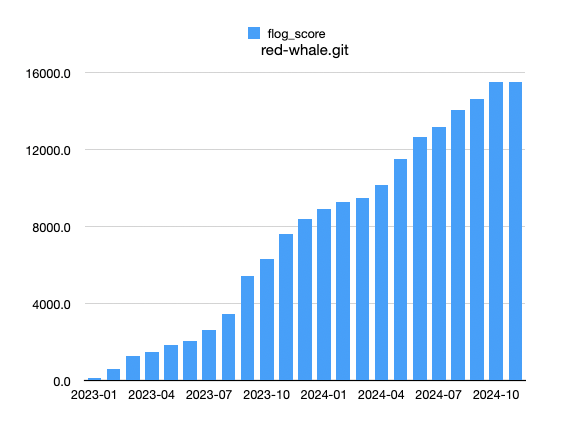
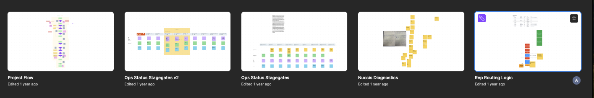
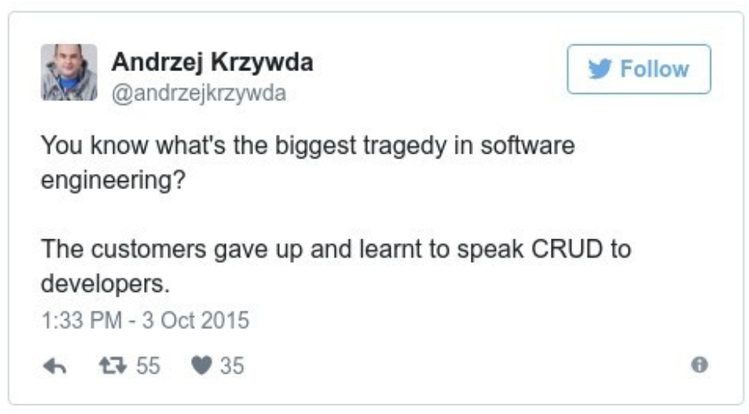

new_changes = set_rescheduled(appointment, changes) if changes.key?(:appointment_at) && over_fifteen_minutes_old?Wresting with Complexity
What is Complexity?
complex (adj), 1650s: "composed of interconnected parts, formed by a combination of simple things or elements" from com - with, together + plectere "to wear, braid, twine, entwine".
— https://www.etymonline.com/word/complex
Why do we have it?
It’s an essential property
The complexity of software is an essential property, not an accidental one. Hence, descriptions of a software entity that abstract away its complexity often abstract away its essence.
No Silver Bullet
— Fred Brooks
— Fred Brooks
The problem domain is complex
There are many things that make software development complex. But the heart of this complexity is the essential intricacy of the problem domain itself.
Forward to Domain-Driven Design by Eric Evans
— Martin Fowler
— Martin Fowler
We have it
Victory

Red Whale

Complexity comes from two places
Domain Complexity | Technical Complexity |
Example: Uber
Domain Complexity
Demand-based pricing
Driver assignment
Route optimization
Technical Complexity
Real-time data processing
Distributed systems
Payment processing
Mobile app development
Example: Football Simulation Game
Domain Complexity
Player attributes
Team tactics
Match simulation
League simulation
Transfer market
Technical Complexity
Multiplayer
in-game purchases
attribute updates
Cross-device compatibility
Real-time updates
Graphics
Example: Orange
Domain Complexity
def dependently_collected_qc_project?
qc? && !collect_funds_independently?
end
def collect_funds_independently? # rubocop:todo Metrics/CyclomaticComplexity
payment_type == PAYMENT_TYPE_CASH ||
(parent_project.blank? && qc_project.blank?) ||
(og? && ((qc_project.payment_type == PAYMENT_TYPE_CASH) || qc_project.cancelled?)) ||
(qc? && parent_project.payment_type == PAYMENT_TYPE_CASH)
end
Technical Complexity
Broadcasts
Notifications
Integrations (Active Prospect, Optimoroute, Quickbooks, Workday, Twilio)
off-loading background report generation
SQL optimization
These complexities are unavoidable
The Hidden Complexity
Combining the growing complexity of the domain and the complexity of the technical solution.

My Mission
To try to tame the beasts of complexity by keeping the domain and technical complexities separate. Relatedly, I’ve been haunted by this tweet, for forty days and forty nights.

Introducing: Dragon Drip
Dragon Drip is a small-batch coffee roaster that sources raw coffee beans and sells roasted blends online.
I identified 12 flows to get a first 'end-to-end slice' through the business.
Add Bean
Adds a new bean to the inventory
Add Purchase Order
Adds a new purchase order to the system
Receive Purchase Order
Mark purchase order as received
Update inventory with the received beans
Add Roast Type
Adds a new roast type to the system (e.g. French roast)
Add Product
Adds a new product to the system for sale on the shop
is associated with a mix of beans, and a roast type
Has a price
Availibility is determined directly by stock level in the inventory.
Add to Basket
Adds a product to the basket in the shop
Max basket weight can be 10kg
Orders over $50 are free shipping
Place order
Represents a customer placing an order
Order is set to be prepared (roasting is more or less on demand)
Processing orders
Not really a user flow, but would be if we didn’t do it in our domain
We demand the amount of roasted beans required for all orders in the batch that need to be shipped today
For each order this could be a combination of roasts types and amounts of a certain bean across many order items
Across all order items in the batch, we generate a series of demands
Beans are roasted in multiples of 1kg, but sold in quantities of 250g, so there’s a mix of roasted and unroasted coffee around, with different use-by dates
Roast Beans
Beans can only be roasted in minimum 1kg batches
Starts the use by date countdown
Roasts are now ready to be allocated to orders
Packing order items
Preparing the coffee blends and putting them in bags
Ship
Orders are packed themselves when the each order item has been packed, and then shipped.
Design it Twice
Designing software is hard, so it’s unlikely that your first thoughts about how to structure a module or system will produce the best design. You’ll end up with a much better result if you consider multiple options for each major design decision: design it twice.
A Philosophy of Software Design
— John Ousterhout
— John Ousterhout
1. Domain Driven Design
My first attempt was Domain-driven design (DDD). In Domain-driven design the domain is the heart of the software, and everything else revolves around it.
Domain model
In DDD a series of types of object are defined that represent the real world domain. High attention is paid to a 'ubiquitous language' between the domain experts (client) and the developers. e.g. if they call it an 'SDR', we call it an 'SDR' in the code.
Layered architecture
+-----------------+ │
| Presentation | │
+-----------------+ │
| Application | │
+-----------------+ │ Dependency Direction
| Domain | │
+-----------------+ │
| Infrastructure | │
+-----------------+ ▼Positives
Identifying different types of objects
There’s a difference between an Entity, where you care about the thing’s identity (e.g. an Order), and a Value Object, where you care about the thing’s value (e.g. an Address). It takes a while, but thinking about the objects not automatically as an ActiveRecord is a good exercise.
Separation of Concerns
The Domain never knows what application it’s being run in, so it can never think about it. It does know that it has some kind of persistence mechanism, but it doesn’t know what it is - (it’s injected in).
The Domain is where everything happens
So much so that I was able to put a Sinatra app and a CLI app over the same domain, and they just handled the user’s flow, not the decisions that were being made.
In the CLI app, an in memory database was used
In the Sinatra app, a CSV was used as the database
The Domain still doesn’t know any of those things exist.
Layered takeaway for our Rails apps
With broadcasting we actually violate the 'layered architecture' flow in a very interesting way. The Application Layer, sometimes all the way down to our 'domain' layer, knows about HTML.
class Projects::Update
def maybe_broadcast_to_live_finance
return unless project.status.in? LIVE_FINANCE_STATUSES
Projects::LiveFinance.add(project) if project.saved_change_to_status? && project.live_financing?
# We know if the HTML is already on the page or not
Projects::LiveFinance.replace(project)
end
endTesting
+ Domain tests are fast (there’s no database)
Negatives
You always go all the way through the stack on every action.
▲
+-----------------+ │ │
| Presentation | │ │
+-----------------+ │ │
| Application | │ │
+-----------------+ │ │
| Domain | │ │
+-----------------+ │ │
| Infrastructure | │ │
+-----------------+ ▼It’s not really as separated as it seems
┌──┐ ┌───────────┐ ┌──────┐ ┌────────────┐ ┌──────┐ ┌───┐ ┌──┐
────► │UI├───► │Application│ ---> │Domain│─────► │Persistence │ ────► │Domain│ --> │App│--> │UI│
└──┘ └───────────┘ └──────┘ └────────────┘ └──────┘ └───┘ └──┘Testing
Because everything is so isolated, it’s all mocks and stubs.
OrderRepository
#find_by_id
when the persistence layer returns a order
behaves like a successful result
when the persistence layer raises an exception
behaves like a failure result
#save
calls the save on the persistence layer with the order
behaves like a successful result
#all
behaves like a successful resultRepositories
They’re fine, but, I still ended up thinking very CRUDily.
Writing it all out by hand
When it comes to writing #save, #find etc, Rails gives me a lot for free. I’m used to it.
2. 'Functional Core, Imperative Shell'
Push the I/O to the edges, and keep the decision making in a core that is pure and functional.
The edges are larger than in DDD - they handle the Technical Complexity. The core is as complex as your Domain.
┌───┐ ┌────────────────────────────────┐ ┌───┐
│I/O│────► │Business Logic / Decision Making│─────► │I/O│
└───┘ └────────────────────────────────┘ └───┘An example of the problem
What does this code return?
@product.saveBoolean. What else does it do?
@product.save # => BooleanIt changes the @product object. What else could it return?
@product.save # => [Boolean, @product*] (@product has also changed)Holy S#!t
@product.save # => [Boolean, @product*,
# AdapterNotFound,
# AdapterNotSpecified,
# AttributeAssignmentError,
# ConnectionError,
# ConnectionFailed,
# ConnectionTimeoutError,
# Deadlocked,
# InvalidForeignKey,
# LockWaitTimeout,
# QueryCanceled,
# ReadOnlyRecord,
# RecordInvalid,
# RecordNotDestroyed,
# RecordNotSaved,
# RecordNotUnique,
# Rollback,
# SerializationTypeMismatch,
# StatementInvalid,
# UnknownAttributeError,
# ConnectionBad (PostgreSQL-specific),
# SocketError,
# StandardError,
# Error]What else could it do?
Absolutely anything.
class Order < ApplicationRecord
before_save :set_defaults, :apply_discounts, :calculate_total, if: :new_record?
before_save :adjust_inventory
before_save :check_order_limits, if: :bulk_order?
after_save :notify_customer
after_save :generate_invoice, if: :paid?
after_save :trigger_fulfillment_process, if: :ready_for_fulfillment?
after_save :update_customer_statistics
validates :customer_id, presence: true
validates :status, inclusion: { in: %w[pending paid shipped completed canceled] }
before_validation :sanitize_data, on: :create
after_commit :log_order_change, on: %i[create update]
endBuilding the Core
A document of what the business problem does.
When developing, I’m only thinking about the domain problem.
An example flow
class ReceivePurchaseOrder < ServiceObject
def call(purchase_order:, recipient_id:, received_on:)
receipt_details = ReceiptDetails.new(recipient_id:, received_on:)
updated_purchase_order = purchase_order.receive(receipt_details)
# Return a command to store the updated purchase order
Success([UpdatePurchaseOrder.new(updated_purchase_order),
IncrementRawStock.new(bean_id: updated_purchase_order.bean_id,
g: updated_purchase_order.g)])
end
endThe Command
Just a signal of intent.
class IncrementRawStock
attr_reader :bean_id, :g
def initialize(bean_id:, g:)
@bean_id = bean_id
@g = g
end
endHandling the command
result = Flows::ReceivePurchaseOrder.call(**args)
return result if result.failure?
result.commands.each do |cmd|
case cmd
when IncrementRawStock
StockLevel.find_by(bean_id: cmd.bean_id).increment(cmd.g)
when SomeOtherCommand
else
raise UnknownCommandError
endTesting
+ There isn’t a single mock or stub in the core when it’s tested, they’re all just objects, there’s nothing to mock!
+ The 'unit test' isn’t each file, most of them don’t really do anything other than house data. We unit test the Flow, which has been designed to map to a real-world person’s goal:
┌───┐ ┌────────────────────────────────┐ ┌───┐
│I/O│────► │Business Logic / Decision Making│─────► │I/O│
└───┘ └────────────────────────────────┘ └───┘
|────────────────────────────────|
UNIT TEST THISThe Commands I stole from Elm
-- MODEL
model = 0
update : Msg -> Model -> Model
update msg model =
case msg of
Increment ->
model + 1
Decrement ->
model - 1
view : Model -> Html Msg
view model =
div []
[ button [ onClick Increment ] [ text "+" ]
, div [] [ text (String.fromInt model) ]
, button [ onClick Decrement ] [ text "-" ]
]It’s this pattern
┌────────┐
│ MODEL │◄─────────┐
└────────┘ │
│ │
▼ │
┌──────────┐ │
│ VIEW │ │
│ (model) │ │
└──────────┘ │
│ │
▼ │
┌────────────────┐ │
│ UPDATE │ │
│(model, Command)├──┘
└────────────────┘The Lego Problem
Because it’s all just in memory, we can chain things together much more safely inside the core, but to do so, we need a shared way of joining them together.

Introducing the Result Monad
A monad is just a monoid in the category of endofunctors, what’s the problem?
It’s a wrapper.
# if you're happy, return your result in a Success
# If you're not happy, return it in a Failure.
def validate_user(user)
if user.valid?
Success(user)
else
Failure(user.errors)
end
endUsing the wrapper
result = validate_user(user)
if result.success?
DoSomethingElse.call(success.value!)
else
puts result.failure
endThis gives us lego
Imagine we’re: * validating the user * checking the stock level of the basket * processing payment * then creating an order.
┌───────┐ ┌───────┐ ┌─────────────┐ ┌─────┐
────► │Boolean│──► │Integer│ -->│Stripe object│--> │Order│
└───────┘ └───────┘ └─────────────┘ └─────┘ ┌──────┐ ┌──────┐ ┌──────┐ ┌──────┐
────► │Result├───► │Result├───►│Result├───► │Result├───►
└──────┘ └──────┘ └──────┘ └──────┘A transaction
class PlaceOrderExample
include Dry::Transaction
step :validate_basket # │
step :check_stock # │
step :process_payment # │
step :create_order # │
# ▼
private
def validate_basket; end
def check_stock; end
def process_payment; end
def create_order; endMore useful in the I/O
Although this is a very functional pattern, and it’s been quite nice to say "everything returns success or failure", the power is probably best used for wrapping uncertainites.
Remember this?
@product.save # => [Boolean, @product*,
# AdapterNotFound,
# AdapterNotSpecified,
# AttributeAssignmentError,
# ConnectionError,
# ConnectionFailed,
# ConnectionTimeoutError,
# Deadlocked,
# InvalidForeignKey,
# LockWaitTimeout,
# QueryCanceled,
# ReadOnlyRecord,
# RecordInvalid,
# RecordNotDestroyed,
# RecordNotSaved,
# RecordNotUnique,
# Rollback,
# SerializationTypeMismatch,
# StatementInvalid,
# UnknownAttributeError,
# ConnectionBad (PostgreSQL-specific),
# SocketError,
# StandardError,
# Error]===
It becomes this:
@product.save # => Success(product) or Failure(any of the errors)The 'I/O' layer outside of Rails
An absolute hell hole.
Me using the most popular SQL management gem to write some data
class OrderRepository
include Dry::Monads[:result]
include Dry::Monads::Do.for(:create, :find)
def initialize(container = DB_CONTAINER)
@orders = container.relations[:orders]
end
def create(order)
order_data = {
id: order.id,
customer_id: order.customer.id,
shipping_address_json: order.shipping_address.to_h.to_json,
billing_address_json: order.billing_address.to_h.to_json,
status: order.status.to_s,
created_at: Time.now
}
@orders.changeset(:create, order_data).commit
order.items.each do |item|
OrderItemRepository.new.create_for_order_id(order.id, item)
end
Success(order)
rescue StandardError => e
Failure(e.message)
end
def find(order_id)
order_data = @orders.by_pk(order_id).combine(:order_items).one!
customer = yield CustomerRepository.new.find(order_data[:customer_id])
shipping_address_data = JSON.parse(order_data[:shipping_address_json])
billing_address_data = JSON.parse(order_data[:billing_address_json])
order = Order.new(order_data.merge(
customer:,
shipping_address: Address.new(shipping_address_data),
billing_address: Address.new(billing_address_data),
items: map_items_to_entities(order_data[:order_items])
))
Success(order)
rescue StandardError => e
Failure(e.message)
end
private
def map_items_to_entities(items_data)
items_data.map do |item_data|
OrderItem.new(item_data)
end
end
endThe best idea I’ve got for now
Domain Complexity - Functional Core
Technical Complexity - Rails
┌────────┐
│ MODEL │◄─────────┐ | The Rails DB
└────────┘ │
│ │
▼ │
┌──────────┐ │
│ VIEW │ │
│ (model) │ │ | The Rails views, controllers, routing
└──────────┘ │
│ │
▼ │
┌────────────────┐ │
│ UPDATE │ │
│(model, Command)├──┘ | The functional core, returning commands and some modified objects for Rails to save.
└────────────────┘